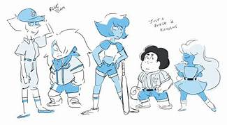

Hola, en este apartado hablaremos sobre el Estilo Visual y de Narracion de Steven Universe

Estilo Visual Y Narrativo
Estilo Visual
Diseño de Personajes: Los personajes en "Steven Universe" tienen diseños simples pero expresivos, con formas
geométricas y colores vibrantes que los hacen fácilmente reconocibles.
Animación: La animación en la serie es fluida y a menudo utiliza técnicas de animación tradicional combinadas
con elementos de animación digital para crear un estilo único y dinámico.
Escenarios: Los escenarios suelen ser detallados y coloridos, con una estética que combina elementos
fantásticos y cotidianos de manera creativa.
Narrativo
Episódica y Serializada: La serie combina episodios autocontenidos con una narrativa serializada
más amplia, lo que permite explorar tanto historias individuales como tramas que se desarrollan a lo largo
de varios episodios o temporadas.
Desarrollo de Personajes: "Steven Universe" se centra en el desarrollo de sus personajes, permitiendo que
evolucionen a lo largo del tiempo y enfrenten desafíos personales que contribuyen a su crecimiento y madurez.
Exploración de Temas Profundos: La serie aborda temas profundos y emocionales de manera accesible para un público
diverso, utilizando metáforas y simbolismos que invitan a la reflexión sobre temas como la identidad, la
diversidad y la aceptación.